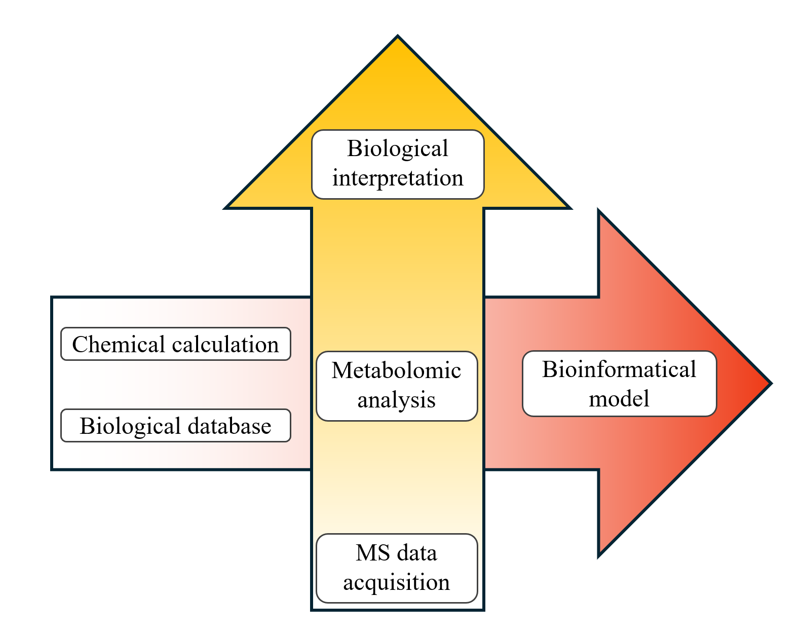
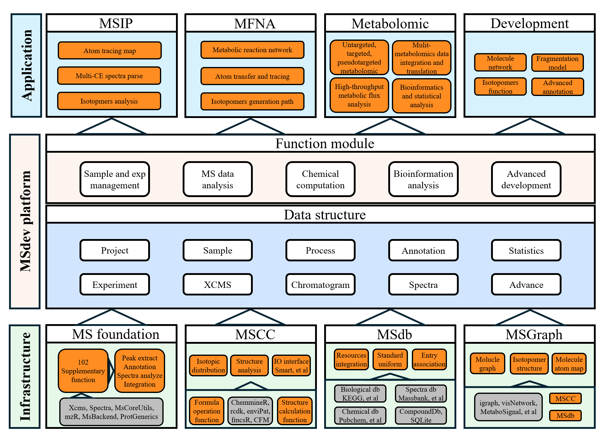

MSIP
MSIP.RmdMSdev
MSIP is designed based on MSdev, a platform for metabolomics data analysis and methodology development.

MSdev design
MSdev integrate, extend and develop lots of MS data analysis, chemical calculation tools and database, which is nessesary for MSIP and other advance metabolic method.

MSdev architecture
Install MSdev from github:
(Not public available until our article publised)
devtools::install_github("DrRuiLi/MSCC")
devtools::install_github("DrRuiLi/MSdb")
devtools::install_github("DrRuiLi/MSdev")